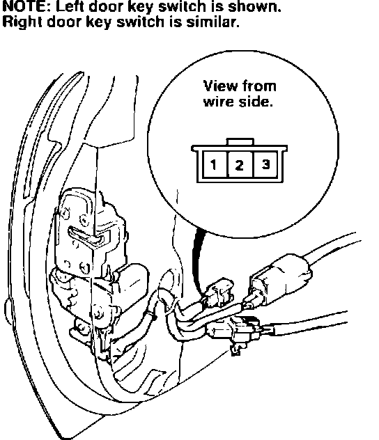
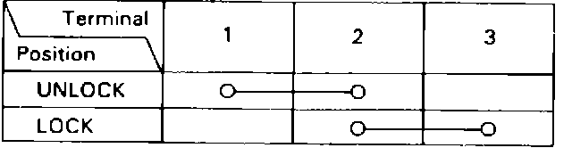
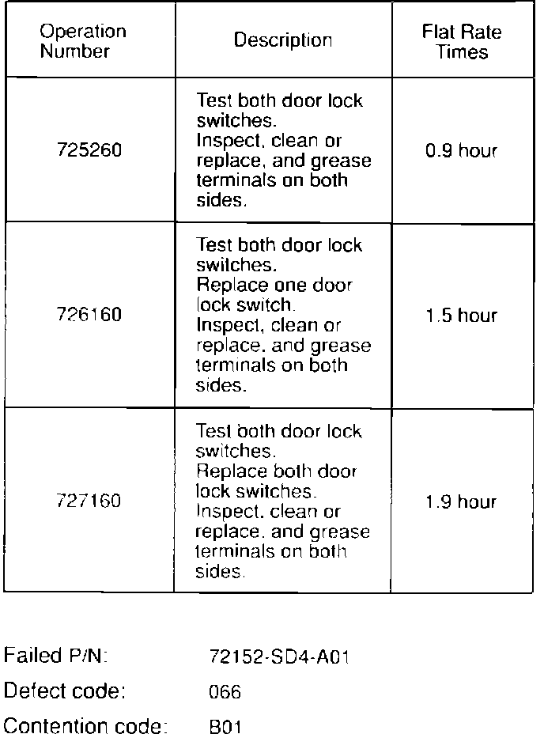

Security Alarm - Erratic Operation
January 28, 1991YEAR MODEL
'89 -'90 LEGEND
VIN APPLICATION BULLETIN NO
ALL with
security system 91-006
Legend Security Alarm Sounds for No Apparent Reason

SYMPTOM
The security system alarm may sound at anytime for no apparent reason.
When you lock or unlock the doors with the key, the security system may not arm or disarm itself.
PROBABLE CAUSE
The door lock switch connector(s) may be corroded, or the door lock switch(es) may have high resistance.
CORRECTIVE ACTION
Inspect both front doors, and repair them as necessary:
1. Remove the door panel (refer to section 20 of the service manual.)
2. Disconnect the flat 3-cavity connector at the end of the door lock switch harness.

3. Check continuity and resistance in both switch positions between the terminals shown in the table.
4. If continuity agrees with the table, and resistance is less than 10 ohms, go onto step 5. If continuity does not agree with the table, or resistance reads more than 10 ohms, replace the door lock switch with one listed under PARTS INFORMATION, then go on to step 5.
5. Remove the terminals from both halves of the door lock switch connector with terminal removal tool 07HAZ-002001A (from Terminal Kit P/N 07JAZ- 003000A). If you've replaced the switch, don't remove terminals from its connector, just pack the connector with dielectric grease (listed under PARTS INFORMATION).
6. Inspect the terminals.
It they are not oxidized, go on to step 7.
It they are ligh.tly oxidized, clean them thoroughly with a small stainless steel brush (Snap-on # AC5A or equivalent).
If they are heavily oxidized, replace them with new terminals from the Kit (male: P/N 07JAZ- 001 030A, female: P/N 07JAZ-001 040A).
7. Coat the terminals with dielectric grease (don't leave any bare spots), and install them in the connector.
8. Reconnect the connector and secure it to the door in a horizontal position so water will not accumulate in its cavities.
9. Disconnect the two connectors next to the door lock switch, then inspect/repair and secure them as described in steps 6, 7, and 8.
10. Carefully reinstall the vinyl liner on the door. Press its adhesive firmly against the door all the way around to assure a continuous, weather-tight seal.
11. Temporarily hang the door panel in position, then check the operation of the courtesy lights, the power windows, the power door locks, and the security system.
12. Reinstall the door panel.
13. Repeat steps 1 through 12 on the other door.
PARTS INFORMATION
Dielectric grease, 50 g. (1-3/4 oz.) P/N 08798-9001
Terminal, male P/N 07JAZ-001030A
Terminal, female P/N 07JAZ-001040A
2-Door
Switch assembly, L. door lock P/N 72152-SG0-A01
Switch assembly, R. door lock P/N 72112-SG0-A01
4-Door
Switch assembly, L. door lock P/N 72152-SD4-A01
Switch assembly, R. door lock P/N 72112-SD4-A01

WARRANTY CLAIM INFORMATION
In warranty: The normal warranty applies.
Out-of-warranty: This repair, like any repair performed after warranty expiration, may be eligible for goodwill consideration by the District Service Manager. You must request consideration, and get the DSM's decision, before starting the work.